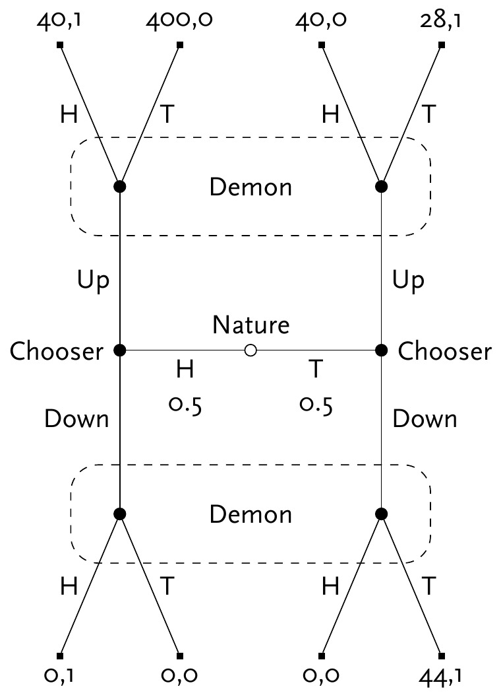

Why Ain’t Evidentialists Rich?
There is a familiar complaint against Causal Decision Theory (CDT) that goes back to the modern origins of decision theory in the 1970s. Here is a recent version of it due to Ahmed and Price (2012). (I’ve slightly changed some of the wording, but otherwise this argument is quoted from page 16 of their paper.)
- In Newcomb problems, the average returns to one-boxing exceed that to two-boxing.
- Everyone can see that (1) is true.
- Therefore one-boxing foreseeably does better than two-boxing. (by 1, 2)
- Therefore Causal Decision Theory (CDT) is committed to the foreseeably worse option for anyone facing Newcomb’s problem.
Here’s what they, and many other proponents of Evidential Decision Theory (EDT) say follows from 4.
The point of the argument is that if everyone knows that the CDT-irrational strategy will in fact do better on average than the CDT-rational strategy, then it’s rational to play the CDT-irrational strategy. (Ahmed and Price 2012, 17)
This is what Lewis (1981b) called the “Why Ain’cha Rich” argument, and what following Ahmed (2014, 182) and Bales (2018) I’ll call the WAR argument. I’m going to argue the last step of the WAR argument doesn’t follow. Or, more precisely, that proponents of EDT cannot coherently say that it follows. For there are cases where EDT foreseeably does worse than at least some prominent versions of CDT.1
1 Ian Wells (2019) has another case where EDT does worse than some versions of CDT. I think his case successfully shows that WAR arguments are no good, but not everyone is convinced. I’ll come back to Wells’s case in Section 3.
1 Coins and Signals
The example I’ll use is a version of a signalling game of the kind introduced by Lewis (1969). And in particular it’s a version of the broadly adversarial kind of signalling game that is central to the plot of Cho and Kreps (1987). It will involve a human Chooser, and a Demon who is excellent at predictions. The game will have three stages.
At the first stage a fair coin is flipped, and the result shown to Chooser, but not to Demon. At the second stage, Chooser will choose Up or Down, and the choice will be publicly announced. At the third stage, Demon will try to guess what the coin showed. Demon knows the payoff table I’m about to show you, and is arbitrarily good at predicting Chooser’s strategy for what to do given how the coin appears. This prediction is causally independent of Chooser’s choice, but Demon’s guess is not independent; it could be affected by the choice. The payoffs to each player are a function of what happens at each of the three steps, and are given by table Table 1. (The payoffs here are all in utils.)
| Coin | Chooser | Demon | Chooser Payoff | Demon Payoff |
|---|---|---|---|---|
| H | U | H | 40 | 1 |
| H | U | T | 400 | 0 |
| H | D | H | 0 | 1 |
| H | D | T | 0 | 0 |
| T | U | H | 40 | 0 |
| T | U | T | 28 | 1 |
| T | D | H | 0 | 0 |
| T | D | T | 44 | 1 |
Figure 1 shows the game they are playing in tree form. We start at the middle, then move left or right depending on the coin flip, up or down depending on Chooser’s choice, and at one or other angle depending on Demon’s choice. Demons’s payoffs are just as you’d expect - they get rewarded iff they figure out how the coin landed. Chooser’s payoffs are more complicated, but the big things to note are the huge payout if they get to the top-left and Demon does not make a correct prediction, and the generally poor payouts for choosing Down.
I intend the Demon to be a rational player in a game-theoretic sense. But to translate that into decision-theoretic terms, it’s important to make a few stipulations. Demon predicts Chooser’s strategy, that is Chooser’s plan about what to do if the coin lands Heads and what to do if the coin lands Tails, before the game starts. They make their guess about how the coin landed after seeing Chooser’s actual choice, and updating their prior beliefs (about both the coin and Chooser) with this information. If they predict that Chooser will do the same thing however the coin lands, they will have no useful information about the coin, so they will flip their own coin to make a guess. In that case it will be 50/50 whether Demon says Heads or Tails. Also, if Demon is surprised by what Chooser does, i.e., if they had predicted Chooser would do one thing however the coin lands but Chooser does the other thing, Demon will also flip their own coin to make a guess.2 Finally, Demon’s predictions are arbitrarily accurate. It makes the math easiest to assume Demon is correct with probability 1. Some people (myself among them) worry that stipulating the Demon succeeds with probability 1 might take us too close to a case of backwards causation, and it’s very important that Chooser does not cause Demon’s prediction of a strategy. If you have that worry, say that Demon’s probability of successful prediction (whichever of the four strategies Chooser opts for) is 1 - \(\varepsilon\), where \(\varepsilon\) is small enough that it doesn’t make a difference to what is rational for Chooser to do.
2 A key move Cho and Kreps (1987) is that in some cases we can say substantive things about what a player will do if they are surprised in this sense. But Figure 1 is not one of these cases.
Now I want to analyse what Chooser will do if they follow EDT. It should be fairly clear that if the coin lands Heads, Chooser should say Up. The worst possible return from Up is 40, the best possible return from Down is 0. So playing Up if the coin lands Heads is what any theory would recommend, and Chooser will do that whether or not they follow EDT. Indeed, this is so clear that we should assume Demon will predict that Chooser will play Up if the coin lands Heads. So what happens if the coin lands Tails? There are four possibilities here: the two things Chooser might do crossed with the two predictions Demon might make. The expected return to Chooser in these four possibilities is given in Table 2.
| Predict Up | Predict Down | |
|---|---|---|
| Up | 34 | 40 |
| Down | 22 | 44 |
The numbers in Table 2 aren’t entirely obvious; I’ll spell out how I got them.
- If Demon predicts Up if Tails, Demon will flip a coin if the coin lands Tails, whatever Chooser does. That’s because they’ll either get no information (if Chooser plays Up), or will be surprised (if Chooser plays Down). So Chooser will get the average of lines 5 and 6 in Table 1 if they play Up, and the average of lines 7 and 8 if they play Down.
- If Demon predicts Down if Tails, and Chooser plays Up, Demon will think (falsely) that the coin must have landed Heads, since Demon will have predicted that Chooser will only say Up if Heads. So Demon will say Heads. So we’ll definitely be at line 5 of Table 1, where Chooser gets 40.
- If Demon predicts Down if Tails, and Chooser plays Down, Demon will think (correctly) that the coin must have landed Tails. So Demon will say that, and we’ll be at line 8 of Table 1.
In a decision problem like Table 2, EDT says that if Demon is sufficiently likely to be accurate, all that matters is which of the top-left and bottom-right cells is largest. In this case, it’s the bottom-right, so EDT says to play Down. That isn’t absurd in Table 2 itself; it almost certainly results in Chooser getting the best possible payout of 44. So that’s our analysis of the game for EDT: Chooser plays Up if Heads, Down if Tails, gets 40 if Heads and 44 if Tails (plus/minus a small amount in expectation if Demon has \(\varepsilon\) chance of being wrong), and on average gets 42. What does CDT say? This needs a small detour, because ‘CDT’ has become an ambiguous signifier.
2 What is CDT?
David Lewis (1981a) argued that all then-existing versions of CDT were little more than notational variants; they just differed on “emphasis and formulation” (Lewis 1981a, 5). Whether that was true then (and I have some doubts), it isn’t true now. There are now many broadly causal decision theories, i.e., theories that say one should take two boxes in Newcomb’s Problem because it is the causally dominant option, on the philosophical market. To see the available variety, it helps to consider a very abstract decision problem. Chooser has to choose Up or Down, arbitrarily accurate Demon has predicted what Chooser will select, and the payoffs are a function of the choice and the prediction. Table 3 presents the abstract form of that problem.
| Predict Up | Predict Down | |
|---|---|---|
| Up | a | b |
| Down | c | d |
To make the analysis a little easier, I’m going to assume all four of these values are distinct. We could get to the same conclusions as I reach below without this assumption, but we’d have to spent a lot of time checking edge cases. And I’ve set up the puzzles in this paper so that questions about what to do if any of these values are equal don’t come up.
As noted in Section 1, if Demon is accurate enough, EDT just cares about whether a or d is larger. What’s definitional of CDT is that if the prediction is causally independent of the choice, and a > c, and b > d, then Up is the right choice.3 But what if only one of those inequalities hold? In particular, if a > c, and d > b, what is to be done? There are, in the current literature, four different verdicts on this among people who agree with the fundamental claim that CDT makes about Newcomb-like problems.
3 To be clear, I am taking this to be definitional of being a causal decision theory. I think this is a fairly standard usage outside of decision theory, but not all decision theorists go along with it.
- Frank Arntzenius (2008) and Johan Gustafsson (2011) say that in this case CDT should follow EDT, and use the values of a and d to settle the choice. In Table 2 that means playing Down, since 44 > 34.
- Ralph Wedgwood (2013), Dmitri Gallow (2020), Abelard Podgorski (2022), and David Barnett (2022) say that Chooser should choose Up or Down depending on which of a + b and c + d is larger.4 In Table 2 they recommend Up, since 34 + 40 > 22 + 44.
- Jack Spencer (2023) and Melissa Fusco (n.d.) say that if a > c, and d > b, either Up or Down is rationally permissible.
- James Joyce (2012) says that what Chooser does if a > c, and d > b should be a function of how likely they think it is at the start of deliberation that they will choose Up or Down.
4 My description these four theories may seem surprising since they do not emphasise the comparison between a + b and c + d, but rather the comparison between a - c and d - b. This is just a notational variation, and I find my variant easier to use, if a little removed from the underlying philosophical motivation.
5 Or possibly for an older theory like the one defended by Gibbard and Harper (1978) or the one defended by Lewis (1981a)
So these four families of theories say different things about cases like Table 2. And within each family (except possibly the last), it isn’t hard to find other cases where the theories disagree. The best conclusion, I think, is that there are Causal Decision Theories, but no one Causal Decision Theory. CDT is a name for a family of views, not a particular view. There are some people in the literature who try to use the term for one particular one of the nine views I just described5, but I can’t see what particularly motivates any one choice; they all look equally deserving of the term to me.
This is an asymmetry between EDT and CDT. EDT is indeed a theory; it is the theory defended by Arif Ahmed (2014). But CDT is a family of theories. So we shouldn’t compare EDT to CDT as such, we should compare it to a particular causal theory. And for this paper, I’ll focus on the theories listed in point 2 above, and especially the version defended by Gallow.
On Gallow’s view, Chooser should play Up in Table 2, since 34 + 40 > 22 + 44. So Chooser will always play Up in Figure 1. So Demon will always flip a coin to decide what to do. So all of the outcomes where Chooser plays Up are equally likely.6 That means Chooser will on average get a return of 127. Since 127 > 42, on average if Chooser follows Gallow’s theory they will get a better return than if they follow EDT. So if WAR arguments work, they show that EDT should be rejected since it does worse than Gallow’s theory in cases like Figure 1.7
6 That is, the four outcomes at the top of Figure 1, or options 1, 2, 5, and 6 in Table 1.
7 As a referee points out, this doesn’t show that WAR arguments would give one a reason to endorse Gallow’s theory. After all, since Gallow’s theory is a version of CDT, it has worse returns on average than EDT in Newcomb problems. The real point is that showing theory A has better returns than theory B in one particular problem doesn’t mean much unless we show that there is no problem where theory B does better.
3 Wells and Ahmed
Ian Wells (2019) has earlier offered an example where EDT predictably does worse than (all versions of) CDT. His case involves a two-step game, where the EDTer will, at step 2, make a decision that everyone, whether they believe in CDT or EDT or any other plausible theory, think is bad from the perspective of the player at step 1. At round 1 the players can pay to tie their hands at round 2, and the EDTer will make this payment. (As would the CDTer who thinks they will become an EDTer before round 2 starts.) Arif Ahmed (2020) responds that this is an unfair criticism. In Wells’s cases, he says, the EDT and CDT deciders are not in equivalent situations in round one. The EDTer knows that they will use EDT in later rounds, and the CDTer knows that they will use CDT in later rounds. So they have different evidence about what will happen at some later time in a way that’s relevant to their current decision, so it’s not a like-for-like comparison between CDT and EDT at the first stage.
The first thing to say is that I’m not sure this is a fair criticism of Wells. If WAR arguments work anywhere (something that Ahmed believes but Wells is only assuming for reductio), they are meant to work against CDT in Newcomb’s Problem. But in that case the CDTer and EDTer also have different subjective credences about the problem they face. The CDTer thinks that they have a transparent box and an empty box in front of them; the EDTer thinks that they have a transparent box and a box full of money in front of them. If differences in credences about what one will do mean that WAR arguments are unfair, then WAR arguments don’t work in the very case they are designed for. So I think Wells’s argument works, and that Ahmed’s criticism does not rescue the argument for EDT.
Set that aside though, because the main thing I want to add is that my example does not turn on differences in the subjective states of the possible choosers. Every chooser, whether they follow EDT, Gallow’s theory, or any other, will choose Up if the coin lands Heads. And this is common knowledge. Demon knows this, and Chooser knows that Demon knows it, and so on. The only difference is that if Chooser follows EDT, they will play Down if Tails. And that’s good as far as it goes; they’ll probably get the highest possible payoff they can get at that point. More importantly for this debate, they will have the same subjective states if Tails is true whether they follow EDT, Gallow’s theory, or anything else. They will believe that they would have played Up if Heads, and that the Demon would have predicted that. So the different choices they make if the coin lands Tails can’t be traced back to differences in their subjective states. So the complaint that Ahmed makes about Wells’s examples can’t be made here (even setting aside the question of whether it is a fair complaint). Nonetheless, the EDTer ends up with less money in the long run than the follower of Gallow’s theory when playing this game.
4 Why The Examples Matter
This paper is very much not an argument against EDT; instead, it’s part of a war on WAR. WAR arguments overgenerate. They sometimes ‘show’ that EDT is better than Gallow-style CDT, as in Newcomb’s Problem, but sometimes they ‘show’ the reverse, as in Figure 1.
Even when they seem to favour a view like Gallow’s, it’s something of a coincidence that they do. Go back to Table 1, and replace the payoff to Chooser at line 2 with a variable x. As long as x > 0, Gallow-style CDT will still say to choose Up however the coin lands. The value of x is irrelevant to what to do if Tails, and as long as x > 0, Up is guaranteed to do better than Down if the coin lands Heads. But if x < 60, the average payoff to EDT, which is 42 whatever the value of x is, will be greater than the average payoff to Gallow-style CDT, which is (108 + x)/4.
So which of these two theories is favoured by WAR considerations turns on a factor, namely the value of x, that’s not part of the decision process for either theory in the only part of the decision tree where they differ. The two theories differ on what to do if the coin lands Tails. And that turns entirely on the payouts in lines 5 to 8. This is because both theories are consequentialist theories in the sense of consequentialism popularised by Hammond (1988). That’s I think the deepest lesson of this example. Which theory is favoured by WAR considerations is a deeply non-consequentialist consideration; it’s about what theory one would have been best off adopting originally. So strange things can happen if you use it to ‘decide’ between competing consequentialist theories. What the example reveals is that those strange things actually happen in some specifiable cases.
Now I haven’t said anything here about whether non-consequentialists can legitimately use WAR arguments. And this matters a bit more than it used to, because there are sophisticated defenders of non-consequentialism, such as Levinstein and Soares (2020). Nothing I’ve said here tells against the use of WAR arguments by such theories. I think there are independent arguments against these non-consequentialist theories, especially when one thinks about cases where generally reliable predictors are known to have made mistakes, but that’s a story for another day. What I hope to have shown here is that proponents of EDT cannot coherently use WAR arguments. And while I haven’t proven this generalises to all consequentialist theories, i.e., that no consequentialist theory can coherently use WAR arguments, I think cases like mine make that generalisation more probable.8
8 Thanks to two very helpful reviewers for Analysis, who corrected several mistakes in an earlier version of this paper, pushed me to clarify things that I’d rushed by (and at least in two cases made a clumsy error in the rush), and pointed out ways in which I needed to engage more with existing work. The comments helped every part of the paper, but in particular this conclusion about just what the cases show, and why they show that, owes a lot to their feedback.
References
References
Ahmed, Arif. 2014. Evidence, Decision and Causality. Cambridge: Cambridge University Press.
———. 2020. “Equal Opportunities in Newcomb’s Problem and Elsewhere.” Mind 129 (515): 867–86. doi: 10.1093/mind/fzz073.
Ahmed, Arif, and Huw Price. 2012. “Arntzenius on ‘Why Ain’cha Rich?’.” Erkenntnis 77 (1): 15–30. doi: 10.1007/s10670-011-9355-2.
Arntzenius, Frank. 2008. “No Regrets; or, Edith Piaf Revamps Decision Theory.” Erkenntnis 68 (2): 277–97. doi: 10.1007/s10670-007-9084-8.
Bales, Adam. 2018. “Richness and Rationality: Causal Decision Theory and the WAR Argument.” Synthese 195 (1): 259–67. doi: 10.1007/s11229-016-1214-x.
Barnett, David James. 2022. “Graded Ratifiability.” Journal of Philosophy 119 (2): 57–88. doi: 10.5840/jphil202211925.
Cho, In-Koo, and David M. Kreps. 1987. “Signalling Games and Stable Equilibria.” The Quarterly Journal of Economics 102 (2): 179–221. doi: 10.2307/1885060.
Fusco, Melissa. n.d. “Absolution of a Causal Decision Theorist.” Noûs. doi: 10.1111/nous.12459. Early view.
Gallow, J. Dmitri. 2020. “The Causal Decision Theorist’s Guide to Managing the News.” The Journal of Philosophy 117 (3): 117–49. doi: 10.5840/jphil202011739.
Gibbard, Allan, and William Harper. 1978. “Counterfactuals and Two Kinds of Expected Utility.” In, 125–62.
Gustafsson, Johan E. 2011. “A Note in Defence of Ratificationism.” Erkenntnis 75 (1): 147–50. doi: 10.1007/s10670-010-9267-6.
Hammond, Peter J. 1988. “Consequentialist Foundations for Expected Utility.” Theory and Decision 25 (1): 25–78. doi: 10.1007/BF00129168.
Joyce, James M. 2012. “Regret and Instability in Causal Decision Theory.” Synthese 187 (1): 123–45. doi: 10.1007/s11229-011-0022-6.
Levinstein, Benjamin Anders, and Nate Soares. 2020. “Cheating Death in Damascus.” Journal of Philosophy 117 (5): 237–66. doi: 10.5840/jphil2020117516.
Lewis, David. 1969. Convention: A Philosophical Study. Cambridge: Harvard University Press.
———. 1981a. “Causal Decision Theory.” Australasian Journal of Philosophy 59 (1): 5–30. doi: 10.1080/00048408112340011.
Podgorski, Aberlard. 2022. “Tournament Decision Theory.” Noûs 56 (1): 176–203. doi: 10.1111/nous.12353.
Spencer, Jack. 2023. “Can It Be Irrational to Knowingly Choose the Best?” Australasian Journal of Philosophy 101 (1): 128–39. doi: 10.1080/00048402.2021.1958880.
Wedgwood, Ralph. 2013. “Gandalf’s Solution to the Newcomb Problem.” Synthese 190 (14): 2643–75. doi: 10.1007/s11229-011-9900-1.
Wells, Ian. 2019. “Equal Opportunity and Newcomb’s Problem.” Mind 128 (510): 429–57. doi: 10.1093/mind/fzx018.